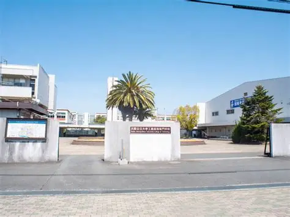

製図基礎の紹介（1年生の方へ）

大阪高専では、2年生から4つのコースに分かれます。
このページでは、その中のひとつ「プロダクトデザインコース」の専門科目について紹介したいと思います。
製図基礎の授業では、製品や構造物を「図面」で正確に伝えるための描き方を学びます。
最初は線の引き方や用紙の扱い方から始まり、JIS規格に基づいた図面の描き方、寸法記入のルール、アイソメ図や投影図など、設計に欠かせない基本技術を身につけます。
製図は、デザインのアイデアを正確に人に伝えるための“共通言語”です。
道具の使い方に慣れれば、自分の考えをしっかり形にできるようになっていきます。最初は難しく感じるかもしれませんが、先生や先輩が丁寧に教えてくれるので安心してください！